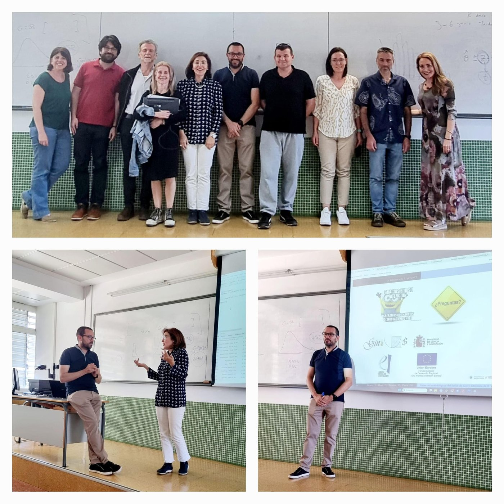

Seminars and conferences
Workshops, seminars, conferences, science communication and inequality in the news
Workshops organised by the project
10 September 2026 · Working group on inequality at the XVIII AECPA Congress (Granada)
Members of GiniUs organised the working group GT 5.4 “Desigualdad, medición y políticas públicas: desafíos metodológicos y aplicaciones en ciencia política” (Inequality, measurement and public policies: methodological challenges and applications in political science) at the XVIII Congress of the Spanish Association of Political Science and Administration (AECPA), held at the Faculty of Political Science and Sociology of the University of Granada (9–11 September 2026). The session, on Thursday 10 September, brought together many members of the project to discuss the measurement of inequality and its applications.
- Coordinator: Samara López Ruiz (University of Granada).
- Discussant: Encarnación Álvarez Verdejo (University of Granada).
| Paper | Author |
|---|---|
| Beyond economic growth: inequality and governance in access to water and sanitation | Samara López Ruiz (UGR) |
| El latinoamericano “feliz y pobre”: ¿por qué las personas de América Latina parecen ser muy felices, incluso en situaciones de dificultad? | Jorge Guardiola Wanden-Berghe (UGR) |
| Medición de la desigualdad con el índice de Gini y la biblioteca de R giniVarCI: aplicaciones en ciencia política | Juan Francisco Muñoz Rosas (UGR) |
| Más allá de “quién obtiene qué”: hacia un enfoque relacional-distributivo de las políticas públicas | Juan Carbajal (Universidad Carlos III de Madrid) |
| Does it really entail a cost? Exploring the relationship between subjective well-being and willingness to pay to conserve water in Andalusia (Spain) | Francisco González-Gómez (UGR) |
| Inferencia para el índice de Gini bajo imputación múltiple: varianza e intervalos de confianza con bootstrap | Pablo José Moya Fernández (UGR) |
| The rise of factories: an opportunity for upward mobility? The case of Milan (1880–1910) | Simone Frisoni (Universidad Carlos III de Madrid) |
Seminars
22 May 2024 · Methodological aspects of the Gini index and the R package giniVarCI
Aspectos metodológicos del índice de Gini y biblioteca de R giniVarCI para su estimación y construcción de intervalos de confianza. E. Álvarez, P.J. Moya, J.F. Muñoz and J.M. Pavía. Seminar organised by the research group EPIC (Economía Pública y Globalización, SEJ-393), University of Granada.

Encuentro Internacional de Especialización para la Investigación en Economía y Empresa (EIEE)
The EIEE is an international meeting for researchers in economics and business organised by the universities of Almería, Granada, Málaga, Jaén and Castilla-La Mancha. Members of GiniUs have taken part in its last two editions.
IX EIEE · Ciudad Real, 21–23 October 2026
Hosted by the University of Castilla-La Mancha. Juan Francisco Muñoz Rosas chaired the session on Quantitative Methods (Friday 23 October), which included the paper Inferencia mediante remuestreo en la medición de la pobreza: evidencia para los índices Foster–Greer–Thorbecke (P.A. Cano Chica). Programme.
VIII EIEE · Cartagena, 6–8 November 2024
Hosted by the Faculty of Business Sciences of the Technical University of Cartagena. Proceedings.
- Errores comunes en la estimación del índice de Gini y biblioteca GiniVarCI para su estimación y construcción de intervalos de confianza. E. Álvarez Verdejo, J.F. Muñoz Rosas, J.M. Pavía Miralles and P.A. Cano Chica.
- Métodos rápidos y convenientes para calcular la varianza jackknife de los índices de Theil y sus versiones corregidas por sesgo. V.E. Yáñez Justicia, E. Álvarez Verdejo, J.F. Muñoz Rosas and A.J. López Montoya.
Conferences
Conferences in 2025
| Dates | Conference | Venue | Contribution of the project |
|---|---|---|---|
| 9–11 December 2025 | CrossMED 2025 · International conference Landscapes Across the Mediterranean (2nd edition), organised with IEREK | University of Granada (Spain) | The Gini index in inequality research: theory and practice with the R package giniVarCI · J.F. Muñoz Rosas |
| 10–11 March 2025 | ICFM-25 · International Conference on Financial Mathematics | Paris (France) | A novel weighted estimator to minimize the bias problem in the Gini index estimation · J.F. Muñoz Rosas |
| 7–8 March 2025 | ICMATAP-25 · International Conference on Mathematical Applications, organised by SAIRAP | Paris (France) | Analysis of skewness in Gini index estimation and its impact on confidence intervals · J.F. Muñoz Rosas |
| 7–8 March 2025 | ICMATAP-25 · International Conference on Mathematical Applications, organised by SAIRAP | Paris (France) | Common pitfalls in the Gini index estimation and the giniVarCI package for the estimation and the construction of confidence intervals for the Gini index · J.F. Muñoz Rosas |
These contributions present results of objective OG1 (bias of the Gini index and its correction, including a weighted estimator) and the free R package giniVarCI. Certificates of presentation are available from the project.
Upcoming conferences (2027)
Conferences of interest for the project with confirmed dates for 2027. Dates and venues are taken from the official websites (checked in November 2026); please check them before planning a trip.
| Dates | Conference | Venue | Why it matters for GiniUs |
|---|---|---|---|
| February 2027 | 3rd III/LIS Comparative Economic Inequality Conference | London School of Economics, London (UK) | Comparative measurement of income inequality |
| 24–25 May 2027 | IARIW–WIUT Conference: Measuring Income, Wealth, and Well-being in Central Asia, the Caucasus, and Neighboring Regions | Westminster International University in Tashkent (Uzbekistan) | Inequality measurement; abstracts due 25 November 2026; selected papers in the Review of Income and Wealth |
| 6–9 July 2027 | 10th International Conference on Econometrics and Statistics (EcoSta 2027) | ShanghaiTech University, Shanghai (China) | Bias correction and inference for the Gini index (OG1, OG2) |
| 11–15 July 2027 | 66th ISI World Statistics Congress (WSC 2027) | Lusaka (Zambia) | Official statistics and inequality indicators; transfer to statistical offices |
| 19–23 July 2027 | 12th Conference of the European Survey Research Association (ESRA 2027) | Paris (France), jointly with WAPOR | Survey data, non-response and missing data (OG2) |
| 31 Aug – 3 Sep 2027 | 12th ECINEQ Conference | UNU-WIDER, Helsinki (Finland); policy event on 31 August | The main international meeting on economic inequality |
| 22–24 September 2027 | EnvStat27 – Environmental Statistics and Data Science | BOKU University, Vienna (Austria) | Statistical methods for water applications (OG4) |
Other regular meetings of interest whose 2027 dates have not yet been announced: the Spring Servitization Conference, the useR! conference, the SEIO and ASEPELT congresses, COMPSTAT and CMStatistics.
Science communication: our research in one minute
To bring the results of the project closer to society, the articles of the team on inequality and poverty are explained in one-minute videos in plain language. They can be freely shared in classes, talks and social networks, citing GiniUs. They are also published in the blog. All the dissemination activities, with their sources, are also listed on the Impact page.
Research stays
The project plans research stays at the centres of its foreign members (University of Glasgow, University of Edinburgh and University of Modena and Reggio Emilia), with seminars to disseminate the results. Completed stays will be listed here.
Final international workshop
An international workshop will be organised at the end of the project (2027) to disseminate the results, with institutions interested in inequality and missing data such as the Spanish Statistical Office (INE).
Inequality in the news
- 2025 · Eurostat. Inequality in enlargement countries.
- 2024 · World Bank. The geography of high inequality: monitoring the World Bank’s new indicator.
- 2023 · World Bank. 2023 in nine charts: a growing inequality.
- 2023 · World Economic Forum. Global inequality is a failure of imagination.
- 2023 · National Review. Was the panic over ‘income inequality’ all based on a mistake?
- 2023 · World Economic Forum (Davos). José María Álvarez-Pallete: inequality is the greatest challenge that society faces in the change of era brought by digital transformation.